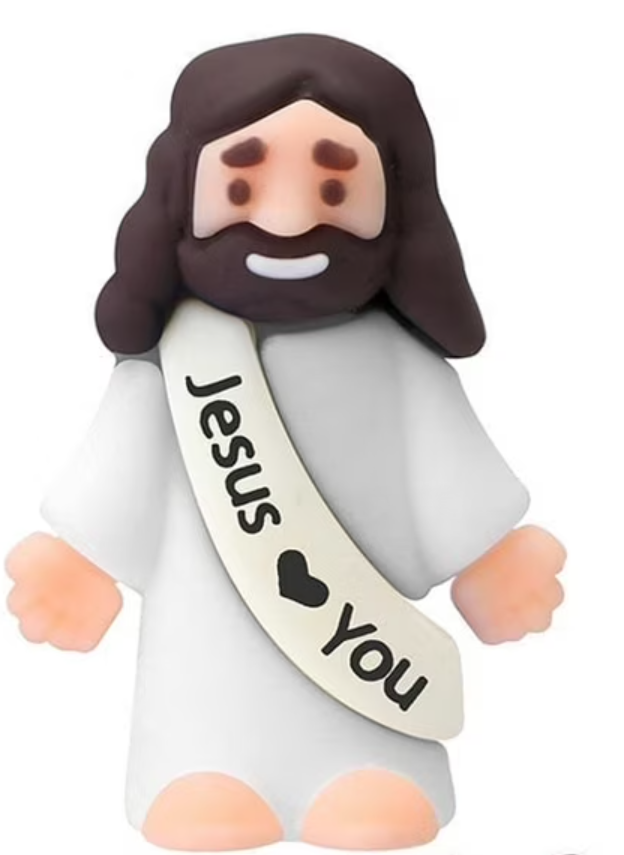

Met onze mini Jezusjes proberen we op een kleine en onverwachte manier iets van warmte, geloof en hoop te delen.
We plaatsen deze mini Jezus figuurtjes op willekeurige plaatsen in en rond Aalst. In de eerste plaats hopen we dat ze een glimlach toveren op het gezicht van de vinder. Misschien kan het voor iemand ook een klein teken zijn, of zelfs een uitnodiging om opnieuw stil te staan bij Jezus en het geloof.

Wat zijn mini Jezusjes?
Mini Jezusjes zijn kleine Jezusbeeldjes die we achterlaten op verschillende plaatsen in en rond Aalst.
Ze zijn eenvoudig en klein, maar net daarin zit voor ons de kracht. Soms kan iets heel klein toch even raken, verrassen of warmte brengen. Voor kinderen en volwassenen is het een zichtbaar en tastbaar teken dat zomaar op hun pad komt.
Waarom doen we dit?
We doen dit in de hoop dat een vinder er even blij van wordt. Een kleine glimlach is voor ons al veel waard.
Tegelijk hopen we ook dat het voor sommige mensen misschien meer mag zijn dan alleen een fijn toeval. Misschien brengt zo’n mini Jezusje iemand opnieuw een beetje dichter bij geloven. Misschien doet het iemand even nadenken, herinnert het aan vroeger, of geeft het gewoon een klein gevoel van hoop.
Jezusje gevonden?
Vind je een mini Jezusje? Dan vinden wij het superleuk om dat te zien!
Laat gerust een reactie achter op onze socials, of maak een kort filmpje en tag ons. Zo kunnen we mee genieten van waar onze mini Jezusjes terechtkomen.